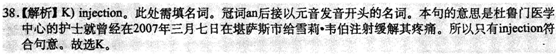

译文：
基本的健康干预能大大降低幼儿镰状细胞性贫血的死亡率。这种疾病会导致身体产生镰刀或者碟状的血红细胞，致使氧气很难从肺部__(36)__传送出去。__(37)__尤其是在撒哈拉以南的非洲地区，遗传到这种疾病的新生儿数量正在增加。
美国科学公共图书馆医学杂志上的一项新的研究表明：到2050年，每年有超过40万婴儿生来就有镰状细胞性贫血。杜鲁门医学中心的护士就曾经在2007年三月七日在堪萨斯市给雪莉•韦伯__(38)__注射缓解其疼痛。疼痛管理对于__ (39)__罹患镰状细胞性贫血的病人护理方面至关重要。每年有10万新增病例。其中大部分孩子都来自阿尔及利亚、刚果民主共和国和印度。这三个国家__(40)__占了2010年患病新生儿的75%。肯尼亚牛津大学的弗雷德里克•皮尔博士主导进行了这项研究
他说，“这是一种遗传混乱现象。如果你从父母身上__(41)__继承了一组基因，你不会有任何的症状，只被称为__(42)__携带者异形接合体人。如果你集成了两组基因，那么你就是镰状细胞性贫血患者，那在没有治疗__(44)__条件的国家，就是很__(43)__严重和致命的疾病。”
开始，这种病只是在疟疾盛行的地方，但因为人口__(45)__流动，现在也在世界其它地方普遍起来。所以，这种疾病显而易见已经是世界的负担并且有增长的趋势。
(1) (2) (3) (4) (5) (6) (7)
(8)
(9)
(10)
(7)
(8)
(9)
(10)